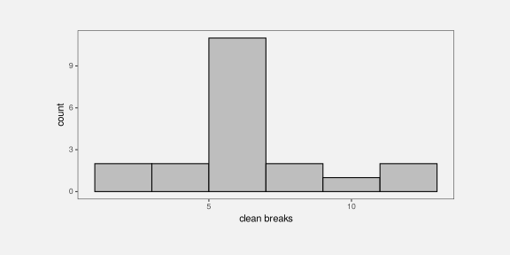

| age | 2011 | 2012 | 2013 | 2014 | 2015 | 2016 | 2017 | 2018 | 2019 | 2020 | 2021 |
|---|---|---|---|---|---|---|---|---|---|---|---|
| 14 | 583 | 524 | 446 | 378 | 318 | 305 | 280 | 281 | 270 | 244 | 219 |
| 15 | 712 | 619 | 528 | 443 | 369 | 339 | 315 | 304 | 272 | 262 | 246 |
| 16 | 810 | 723 | 615 | 482 | 426 | 365 | 328 | 334 | 314 | 302 | 257 |
How Data Visualisation Works
1 Introduction
A data visualisation presents data values in a visual format. In an effective data visualisation, this allows properties of the data to be perceived very rapidly and without conscious effort. For example, Table 1.1 shows data on the crime rate for youth offenders in New Zealand, for the ages 14 to 16, for each year from 2011 to 2021. With this purely text-based, tabular presentation of the data, it requires considerable effort and time to determine any trends in the crime rates.
By contrast, with a simple line plot data visualisation like Figure 1.1 we can perceive the trends in crime rates easily and immediately. It is also easy to perceive more detailed properties like the fact that the trend in crime rates for 16-year-olds is not completely monotonic and the fact that the crime rate for 15-year-olds (the blue line) is always greater than the crime rate for 14-year-olds (the red line) and less than the crime rate for 16-year-olds (the green line).

Figure 1.2 shows a different data visualisation of the same data, this time a heatmap. If we use a data visualisation like Figure 1.2, detecting overall trends becomes more difficult and perceiving detailed changes in the crime rates is very much harder. Not all data visualisations are equally effective.

Although Figure 1.1 is very effective for the questions that we have considered so far, it is far less effective if we are interested in a different question, for example, whether the total crime rate is completely monotonic. Does the sum of the red, blue, and green lines always decrease year on year? A single data visualisation cannot be effective for all possible questions.
Suppose that we are interested in what the exact crime rate was for 16-year-olds in 2011. Neither Figure 1.1 nor Figure 1.2 is the best option for answering this quesion. The best option in this case is actually Table 1.1.
What makes a data visualisation effective? Why are some data visualisations more effective than others? The purpose of this document is to provide explanations for why, when, and how data visualisation works.
Understanding how data visualisation works will enable us to:
- Decide which data visualisations we should use.
- Justify our choice of data visualisation.
- Critically analyse data visualisations created by others.
- Reason about how to improve the effectiveness of a data visualisation.
- Reason about whether a novel visualisation will be effective.
1.1 Scope
The focus of this document is static data visualisations for presentation. The assumption is that our data values have an interesting property and we want to produce a display that makes it easy and efficient for viewers to perceive that property. Some of the information that we cover will also apply to interactive graphics and to exploratory graphics, but the specific requirements of those types of data visualisation will not be addressed.
TODO: link to interactive graphics books like Cook & Swayne and Theus and Unwin.
This document is also focused on what vision science has to tell us about effective data visualisation. We will consider factors that influence how rapidly and how accurately information can be extracted from a data visualisation. This will include findings from a broad range of research, encompassing Statistics, Computer Science, and Psychology. However, this document does not cover all fields of research that impact on data visualisation. We will not, for example, go into the ethical use of data visualisation, beyond a basic assumption that we want to faithfully represent the properties of the data.
TODO: link to Alberto Cairo at least. For resources on this important topic, see …
1.2 Terminology
Data visualisations come in a wide variety of forms (see Figure 1.3), with each form having its own name: scatter plots, line plots, bar plots, histograms, etc. There are also many different names for the different components of a data visualisation: lines, bars, points, axes, scales, legends, keys, titles, sub-titles, etc.


In this document, we will reduce that complexity in two ways. First of all, we will not distinguish between different forms of data visualisation; scatter plots, bar plots, line plots, and histograms are all just data visualisations. Secondly, we will distinguish between only three core components of a data visualisation: data symbols, guides, and labels.1
- Data symbols
- Data symbols are the geometric shapes that represent data values, for example, the lines in a line plot, the bars in a bar plot, and the segments of an annulus in a donut plot (see Figure 1.4). We will spend a lot of time looking at how data symbols work.


- Guides
- Guides are the elements of a data visualisation that explain how data values are represented, for example the axes on a line plot or bar plot and the legend on a donut plot (see Figure 1.5). We will see later that guides have a lot in common with data symbols.


- Labels
- Labels are the text elements that provide context and background information about a data visualisation (e.g., titles and captions). Labels may also guide the viewer to the important properties of the data. Notice that not all text elements are labels.


1.3 Mappings
Although we have reduced a data visualisation to just three components, data symbols, guides, and labels, there are still many possible variations. Which data symbols are being used? How are the axes labelled? What colours are being used? As much as possible, we are going to further reduce the design of a data visualisation to a single question: What mappings are being used?2
Much of this document is focused on considering how data values are being converted, or mapped, into a visual representation. For example, in the line plot of crime rates for different ages in New Zealand in Figure 1.1, the data values are year, crime rate, and age (see Table 1.1) and the visual representation is a set of coloured lines.
We can describe this data visualisation in terms of a set of mappings (see Figure 1.7):
Each
yearvalue is mapped to a horizontal position along the x-axis and eachratevalue is mapped to a vertical position along the y-axis. For example, theyear2011 maps to a location near the left edge of the plot and therate810 maps to a position near the top edge of the plot.
The combined values ofyearandrateare mapped to the locations through which we draw the coloured lines.Each
agevalue is mapped to a colour. For example, theage16 maps to a green colour. Theagevalues are mapped to the colours of the lines.


year, rate, and age to x and y positions and colour. The bottom image is an animation; try refreshing the page or viewing the image it in its own tab to rerun the animation.
The heatmap of the same data (see Figure 1.2) provides a different visual representation because it involves a different set of mappings (see Figure 1.8):
Each
yearvalue is mapped to a horizontal position along the x-axis and eachagevalue is mapped to a vertical position along the y-axis. For example, theyear2011 maps to a location near the left edge of the plot and theage16 maps to a position near the top edge of the plot.
The combined values ofyearandrateare mapped to the locations at which we draw the coloured rectangles.Each
ratevalue is mapped to a colour. For example, therate810 maps to white, while lowerratevalues map to progressively darker shades of purple. Theratevalues are mapped to the colours of the rectangles.


year, rate, and age to x position, colour, and y position. The bottom image is an animation; try refreshing the page or viewing the image it in its own tab to rerun the animation.
We will look at a variety of different mappings from data values to data symbols (Figure 1.9). Understanding why some mappings work better than others will help us to understand why some data visualisations are more effective than others.

1.4 Summary
Data visualisations can be incredibly effective for presenting important properties of data values. However, any one data visualisation can only be effective for certain data values and for certain data properties.
The goal of this document is to explain why some data visualisations are more effective than others; how data visualisation works.
The important elements of a data visualisation are data symbols, which are visual representations of the data values, guides, which explain how data values are transformed to data symbols, and labels, which provide context and guidance.
We can characterise a data visualisation in terms of the mappings that it uses to convert data values into data symbols.
2 The Visual System
Understanding why some mappings are more effective than others will depend upon an understanding of how the human visual system works. The effectiveness of a mapping from data values to data symbols will depend on how well we can map back from the data symbols to the properties of the data (Figure 2.1).

In this section we will establish a very simple model of the visual system that we can refer to as we discuss different mappings.3 We will add some more detail about the visual system as we need to in later sections.
2.1 The eye
In order for us to perceive a data visualisation, light from the data visualisation must enter the eye. Light passes through the pupil, is focused by the lens, and is projected onto the retina at the back of the eye. The retina contains around 100 million light-sensitive nerve cells and signals from those are combined into about 1 million nerve fibres in the optic nerve, which passes signals on to the brain (see Figure 2.2). A very large amount of visual information is gathered by the eye and passed on to the brain.

2.2 Visual processing
The processing of the signals from the optic nerve occurs in several areas of the brain. Very basic visual features are extracted first, such as position (spatial arrangements), angle (orientations), colour, and simple patterns (spatial frequencies). This low-level information is passed on and built upon to produce higher-level representations, such as regions and shapes. Information is then also integrated from prior knowledge to assist with the identification of objects—things like trees, animals, and faces.

Lower-level processing occurs subconsciously and more rapidly than higher-level processing, which can require cognitive effort (see Figure 2.4). Furthermore, lower-level processing occurs in parallel and can involve many instances of visual features at once, whereas higher-level processing will only focus on one or a few items. On the other hand, lower-level visual features are rapidly discarded as our attention shifts, while higher-level visual objects are more persistent and may become part of long-term memories.

Figure 2.5 shows an image that is made up of many small elements: tiny triangles with different lengths, orientations (angles), and colours. The orientations of the triangles represents wind direction and the length of the triangles represents wind strength; blue triangles are over the sea and green triangles are over land.4 The visual system can very quickly perceive many small elements like this at once. There is no need to concentrate separately on every individual triangle in the image. At a higher level of processing, darker and lighter regions are identified as well as regions of different colours. For example, a band of lighter wind forms a line from the top-left corner at a roughly 45-degree angle. At a higher level of processing again, at least for the denizens of Oceania, the green regions are recognised as a very familiar object: the outline of New Zealand.
The small lines convey a lot of simple pieces of information; what is the wind strength and direction at each location. The darker and lighter regions convey several more complex ideas like regions of stronger and lighter winds. The green regions combine to convey the single complex and abstract concept of New Zealand.

2.3 Summary
The human visual system captures a large amount of information from the visual field. Large numbers of simple features are rapidly extracted, while more complex visual elements take longer and require more congnitive effort, but persist for longer.
3 Visual Features
We have established that the mappings from data values to data symbols are fundamental to a data visualisation. However, there are many possible ways to convert data values into visual representations; there are many possible mappings to choose from.
We have also begun to explore the visual system and we have identified three levels of visual processing: visual features, visual shapes, and visual objects.
In this section, we begin to explore different sorts of mappings, starting with the simplest sort of mapping, where each data value is mapped to a basic visual feature of a data symbol (Figure 3.1).


a) is mapped to a visual feature (x) of a single data symbol.
3.1 Bar charts
In order to demonstrate mapping data values to visual features, we will work with a data visualisation of the total number of crimes for different ethnic groups. The data values are shown in Table 3.1.
| group | total |
|---|---|
| European/Other | 31274 |
| Māori | 41787 |
| Pasifika | 6993 |
| Unknown | 5632 |
A bar plot of these data is shown in Figure 3.2. This is a very effective way to visualise the total values, particularly if we are interested in comparing the raw totals. With this data visualisation, it is very easy to answer questions like the following:
- Which ethnic group has the largest total number of offenders?
- Which ethnic group has the smallest total number of offenders?
- Is the total number of offenders higher for
MāoriorPasifika? - Is the total number of offenders for
European/Othermore or less than half the total forMāori?

Why is the data visualisation in Figure 3.2 so effective? To help answer that question, we need to look at how the data values are being mapped to data symbols.
3.2 Visual features
The data symbols in Figure 3.2 are a set of rectangles or bars. However, the important visual feature of the rectangles is their length; the thickness of the bars does not relate to the data values at all (see Figure 3.3). The total number of crimes for each ethnic group is represented by the length of a rectangle. Each data value is mapped to the length of one rectangle.

total number of crimes, have been mapped to the lengths of the bars (the purple lines).
There is another mapping being used in Figure 3.2: The crime group is mapped to the vertical positions of the bars (see Figure 3.4). Each group value is mapped to the vertical position of one rectangle.

groups, have been mapped to the positions of the bars (the purple dots).
Length and position are examples of basic visual features. One way to make an effective data visualisation is to map data values to the basic visual features of a data symbol. This is effective because basic visual features are identified rapidly and without conscious effort by our visual system. Figure 3.5 shows some other examples of basic visual features.

One reason why a bar plot is an effective data visualisation is because it involves a mapping from data values to the basic visual features of data symbols—the the positions and lengths of bars—and basic visual features are processed rapidly and subconsciously by our visual system.
3.3 Quantitative features
As we discussed in Chapter 2, the real purpose of mapping data values to data symbols is to make use of the visual system to map back to the data values. In this section, we are considering mappings from data values to basic visual features, so we need to consider how well we are able to map back from visual features to data values (Figure 3.6).

One issue to consider is whether a visual feature is able to represent all of the information in the data values.5 Some types of data contain more information than others:
Quantitative data consists of numeric values, which naturally possess not only an ordering, but information about the size of differences between values. For example, the
year2020 comes after the year 2010 and there is a gap of 10 years in between. This is also referred to as interval data. Ratio data is quantitative data that also contains a “zero” reference value, so there is also information about absolute size and ratios of differences. For example, 200 offenders is twice as many as 100 offenders.Qualitative data consists of categorical values that are typically character values. Ordinal data consists of categories that are ordered, but there is no information about the size of differences. For example, a “high” crime level is more severe than a “medium” crime level, which is more severe than a “low” crime level, but we cannot measure the size of the differences. Nominal data consists of just group labels, e.g., ethnic groups, and the only information we have is that the categories are different from each other.
Figure 3.7 shows that position, length, angle, and area are visual features that are capable of representing quantitative data values. For example, a bar that is twice as high as another bar comfortably represents a data value that is twice as much as another data value. All but position also possess a natural representation of zero.

By contrast, Figure 3.8 shows that colour and shape are not capable of representing quantitative values. For example, the colour blue is not twice the colour green and a plus sign is not 10 more than a triangle. In effect, these visual representations lose information.

The bar plot in Figure 3.2 visualises the total number of offenders, which are quantitative data values. These quantitative values are mapped to the lengths of bars, which is a visual feature that is capable of conveying all of the information in quantitative values.
One reason why a bar plot is effective for visualising quantitative data values is because the quantitative data values, the counts, are mapped to a quantitative visual feature, the lengths of the bars.
3.4 Qualitative features
If we have qualitative data, then we are primarily concerned with conveying differences between data values. Figure 3.9 shows that position, colour, and shape are capable of representing qualitative data values. For example, blue is clearly different from green, which is clearly different from brown.

By contrast, Figure 3.10 shows that length, area, and angle are not appropriate for representing qualitative data values. In this case, the visual features imply an inherent order, which is misleading because that adds information that is not present in the data values.

The bar plot in Figure 3.2 maps the ethnic groups, which are qualitative data values, to the position of bars, which is a qualitative visual feature.
One reason why a bar plot is effective for visualising qualitative data values is because the qualitative data values, the groups, are mapped to a qualitative visual feature, the positions of the bars.
3.5 Accuracy
Another issue that impacts on how well we can map back from a visual feature to the data values (Figure 3.6) is the accuracy with which we can perceive quantitative values from visual features. For example, how well can we perceive the size of the difference between the length of two bars?6
It is easy to demonstrate that judgements of this sort are harder for some visual features than others. For example, Figure 3.11 presents sets of three bars, which differ by length, circles, which differ by area, and polygons, which differ by shape (number of sides). Judging the relative sizes of the bars is easier than judging the relative sizes of the circles and comparing the polygons is extremely difficult.

This issue has been studied experimentally and Figure 3.12 shows the established ordering of the accuracy of basic visual features, with more accurate visual features at the top. A data visualisation that maps data values to visual features near the top of this ranking will be more effective than one that maps data values to visual features near the bottom.

The bar plot in Figure 3.2 maps the total number of offenders, quantitative values, to the lengths of bars, which is an accurate visual feature. This means that viewers can make accurate comparisons between the lengths of the bars.
One reason why a bar plot is effective for visualising quantitative data values is because the quantitative data values, counts or proportions, are mapped to a very accurate visual feature, the lengths of the bars.
3.6 Capacity
When we are visualising qualitative data values, we are no longer concerned with accurately perceiving the size of differences; all we are concerned with is perceiving whether two values are different. For example, can we perceive a difference between two colours?
The issue in this scenario is the capacity of a visual feature: how many different categories can be represented (and still perceived as clearly different from each other).
Figure 3.13 shows that colour has a limited capacity. A small number of different colours are very easy to differentiate, but the differences become harder to perceive with a greater number of colours.

By contrast, Figure 3.14 shows that position has a very large capacity. We can easily differentiate between locations even as the number of locations becomes large.

The bar plot in Figure 3.2 maps the ethnic group to the position of bars, which makes it easy to differentiate between the different ethnic groups.
One reason why a bar plot is effective for visualising qualitative data values is because the qualitative data values, the groups, are mapped to a visual feature that has excellent capacity, the positions of the bars.
3.7 Case study: Dot plots
We have seen that, for several reasons, Figure 3.2 is an effective way to visualise the total number of offenders for different ethnic groups. Figure 3.15 shows an alternative representation of these data in the form of a dot plot (Cleveland 1985).

Like the bar plot, this is a very effective data visualisation, and for very similar reasons. This data visualisation uses a different data symbol, data points instead of bars, but each data value is mapped to a basic visual feature of one data symbol. Furthermore, the quantitative data values (the totals) are mapped to the horizontal position of the points, which is a very accurate visual feature, and the qualitative data values (the groups) are mapped to the vertical position of the points, which is a visual feature with a high capacity.
It could be argued that the dot plot in Figure 3.15 is even more effective than the bar plot in Figure 3.2 for perceiving the differences between totals because position ranks higher than length in Figure 3.12. On the other hand, if we want to compare totals in terms of their ratios, Figure 3.2 is superior because it includes a representation of zero.
3.8 Case study: Pie charts
Figure 3.16 shows yet another visualisation of the total number of offenders for different ethnic groups, this time a pie chart. This is a less effective representation of the data than the bar plot in Figure 3.2 or the dot plot in Figure 3.15 and we can use familiar reasoning to see why.

The data symbols in Figure 3.16 are wedges or segments of a circle and, on the positive side, the data values are mapped to basic visual features of these symbols: The total values are mapped to the angle and/or area of the wedges and the group values are mapped to the colour of the wedges. Although colour is an appropriate visual feature to represent qualitative data, and it has sufficient capacity to differentiate between only four groups, the mapping of quantitative values to angle and/or area leads to less accurate perception of the differences between totals (compared to the lengths and positions employed in the bar plot and the dot plot).
3.9 Summary
A bar plot is a very common data visualisation for representing numeric values, particularly counts, for several different groups. There are several reasons why bar plots work so well:
- A bar plot maps data values to basic visual features, which are perceived rapidly and without cognitive effort.
- A bar plot maps the quantitative counts to a quantitative visual feature (length) and the qualitative groups to a qualitative visual feature (position).
- A bar plot maps the counts to a visual feature that is perceived very accurately (length) and the groups to a visual feature that has a high capacity (position).
Dot plots are also very effective for the same scenario for the same reasons, except that a dot plot uses position instead of length to represent the quantitative values.
Pie charts by comparison have some weaknesses:
- A pie chart maps quantitative counts to angle and/or area, which is less accurate.
- A pie chart maps qualitative groups to colour, which has a lower capacity.
4 Length
Figure 4.1 shows a bar plot of the total number of offenders in each police district in New Zealand (for ages 14 to 16 and from 2011 to 2021). For the reasons outlined in Chapter 3, this data visualisation is effective for comparing the number of offenders in different police districts.

Figure 4.2 shows a bar plot of the same data, but with the bars ordered from longest to shortest. This data visualisation uses the same mappings as Figure 4.1—police districts are mapped to the vertical positions of the bars and the total counts are mapped to the lengths of the bars—which means that it is also effective for comparing the total number of offenders between police districts.

However, Figure 4.2 is more effective than Figure 4.1 for some comparisons. For example, it is easier to compare the Northland district with the Tasman district in Figure 4.2. The fact that two data visualisations with the same mappings can have a different effectiveness suggests that there is more to know about how different visual features work.
This section covers some more details about how quantitative visual features work.
4.1 The distance effect
In Section 3.5, we saw that position and length were the most accurate visual features (see Figure 3.12). However, this accuracy decreases if the two visual features that are being compared are not in close proximity (see Figure 4.3).7
This helps to explain why Figure 4.2 is more effective than Figure 4.1 for some comparisons (e.g., Northland versus Tasman).

One reason for ordering the bars in a bar plot from longest to shortest is because, for some common comparisons, the ordering places the bars that are being compared closer together, which improves the accuracy of the comparison.
4.2 Unaligned length
Figure 4.4 shows that it is harder to accurately compare the lengths of two bars if they are unaligned and do not share a common base. This also applies to the accuracy of comparing positions.

Figure 4.5 shows an alternative visualisation of the data on the total number of offenders in different ethnic groups. The bar plot of these data that we saw in Figure 3.2 mapped ethnic groups to the positions of the bars so that the bars were arranged vertically with a common left-hand edge. In Figure 4.5, the ethnic groups are mapped to different colours and the bars are “stacked” horizontally.
Although the total number of offenders has been mapped to the same visual feature in both Figure 4.5 and Figure 3.2, the lengths of the bars, comparing those lengths is much harder in Figure 4.5 because the lengths are unaligned.

One reason why stacked bar plots are less effective for some comparisons is because we are forced to compare the unaligned lengths of the bars.
4.3 Case study: Stacked versus side-by-side bar plots
Stacking bars, which creates unaligned lengths, is something that arises when we use a bar plot to show a quantitative variable broken down by more than one qualitative variable. For example, Figure 4.6 shows the number of offenders (quantitative) for each ethnic group (qualitative) and for each year from 2011 to 2021 (qualitative, or at least discrete). In this data visualisation, the number of offenders is mapped to the lengths of the bars, the years are mapped to the horizontal position of the bars, the ethnic groups are mapped to the colours of the bars, and the bars are stacked vertically.
The problem that we face in this situation is that there are four bars to show for each year. Stacking the bars is one solution, but as we have just seen, this makes some comparisons more difficult. For example, we can easily see that the number of offenders in the unknown group increased after 2016, but it is much harder to see what has happened to the European/Other group since 2016.

An alternative visualisation is shown in Figure 4.7. This has placed the four ethnic groups side-by-side for each year. It is now easier to see the changes over time for the European/Other group because all bars are now aligned. Unfortunately, as we saw in Section 4.1, some comparisons are more difficult because the bars are now further apart and have distractors in between.

Yet another variation is shown in Figure 4.8. This time we have placed all years side-by-side for each ethnic group. This provides the clearest view of the changes over time for each ethnic group because the relevant bars are close together and aligned. However, there are other comparisons that are considerably more difficult because of the distance between the relevant bars, for example, comparing between ethnicities for a specific year.

There is no single best visualisation in general for this situation because different visualisations each have their strengths and weaknesses. If a particular sort of comparison is to be emphasised, then one data visualisation might stand out, but there is also the option of providing more than one data visualisation in order to cover more comparisons.
4.4 Perception is relative
Figure 4.9 shows that the perception of differences is relative; it is easier to detect smaller differences when the visual features that we are comparing are smaller.8 It is easier to see that the pair of bars on the left have different lengths and harder to see that the pair of bars on the right have different lengths. All three pairs of bars have different lengths, but the absolute size of the difference is the same, so the size of the difference relative to the bar lengths gets smaller as the bars get longer.

Figure 4.10 shows that we can make it easier to judge the differences by providing reference marks. Each pair of black bars is the same and each pair of bars differs in length by the same small amount. The difference between the bars in each pair is difficult to perceive because the difference is small relative to the lengths of the bars. The reference marks in the middle and right-hand pair of bars provide shorter lengths to compare, so we are able to more easily perceive the small differences. For example, for the pair of bars on the right, we can compare the lengths of the short white gaps rather than comparing the longer black bars.

Figure 4.11 shows a bar plot of the number of offenders in each police district (Figure 4.1) with some grid lines added. Although it is difficult to compare the bars for Northland and Tasman because they are quite far apart and there are distractors in between (Section 4.1), the addition of the grid lines makes it easier to perform the comparison because we are able to compare the distances from the ends of the bars to the nearest grid line. Those distances are much shorter than the bars so it is easier to perceive the small difference.

One reason why grid lines are effective is because they allow comparisons of smaller lengths or distances, which means that it is easier to perceive smaller changes.
4.5 Summary
Bar plots are effective because they map quantitative values to lengths, which are accurate visual features.
However, comparisons between the bars in a bar plot can be difficult if the bars are far apart, especially if there are distractors in between.
Furthermore, stacked bars are more difficult to compare because they require comparing unaligned lengths.
Finally, it is easier to perceive differences between shorter bars than between longer bars because the perception of differences is relative.
Grid lines can help with comparisons because they make the distances being compared smaller, so smaller differences are easier to detect.
5 Colour
Figure 5.1 shows a pie chart of the number of offenders for different levels of crime seriousness (between 2011 and 2021). In this data visualisation, level, which is a qualitative variable, is mapped to colour, which is appropriate for representing qualitative values (see Section 3.4). It is easy to identify different crime levels because it is easy to perceive differences between the colours of the wedges in the pie chart.

Figure 5.2 show another pie chart of the same data, again mapping the qualitative level to colour. It is again easy to differentiate between different crime levels because we can easily perceive differences between the colours of the wedges. However, Figure 5.2 is more effective than Figure 5.1 because we can also perceive an ordering of the wedges from more serious crimes, which are darker wedges, to less serious crimes, which are lighter wedges.

The fact that there can be two data visualisations, Figure 5.1 and Figure 5.2, with the same mappings, the qualitative level of crime maps to the visual feature colour, but the two data visualisations have different effectiveness suggests that there is still more to learn about how different visual features work.
This section covers some more details about how qualitative visual features work.
5.1 Hue, chroma, and luminance
We have so far taken a very simplistic approach to colour, treating it as if it is a single qualitative visual feature (see Section 3.4). However, the perception of colour can be divided into three separate visual features: hue, chroma, and luminance (see Figure 5.3).9 Hue describes what we normally refer to as the colour name: reds, oranges, yellows, greens, blues, and purples. Chroma describes the colourfulness, from bright to dull, and luminance describes the lightness, from dark to light. Our visual system is capable to perceiving changes in hue and changes in chroma and changes in luminance.
We have described colour as a qualitative visual feature so far, but that really strictly only applies to hue. For example, Figure 4.5 used different hues to represent different ethnic groups. Hue is excellent for the perception of differences.

5.2 Ordinal visual features
Chroma and luminance are both qualitative visual features in that they can be used to visualise different groups, but they are also ordinal visual features because we can perceive an ordering from a set of colours that differ in terms of either chroma or luminance or both. A set of colours that transitions from darker to lighter and/or brighter to duller conveys an ordering from larger to smaller.
This helps to explain why Figure 5.2 is more effective than Figure 5.1. In Figure 5.2, the colours differ mostly in terms of luminance and chroma so we are able to perceive changes from larger values to smaller values because the colours transition from darker to lighter.
In this sense, chroma and luminance are able to convey more information than hue because they can represent nominal differences and ordinal differences, whereas hue can only represent nominal differences.
On the other hand, Figure 5.4 shows that chroma and luminance are even more limited than hue in terms of capacity. We can only use chroma and/or luminance to represent nominal data when there are very few different groups to represent.

5.3 Perception is relative
We saw in Section 4.4 that perception of lengths is relative. For example, smaller differences in length are easier to see when the lengths themselves are short (see Figure 4.9).
There is a similar rule for the perception of colours. Our perception of a colour is affected by neighbouring colours.10 This effect is demonstrated in Figure 5.5: the same colour when surrounded by a darker background appears lighter than it does when surrounded by a lighter background.

This effect also applies to the perception of hue. Figure 5.6 shows a pie chart of the number of offenders in each police district, with police district mapped to the colour of the wedges. There are two issues with the perception of the wedge colours: each wedge is affected by its neighbour so that, for example, some of the blue wedges look more green at the boundary with their more blue neighbour and more blue at the boundary with their more green neighbour; furthermore, the colours in the legend are perceived differently from the corresponding colours in the wedges because the legend colours are surrounded by white.

The pie chart in Figure 5.6 is not an effective data visualisation because it maps qualitative data values with lots of different groups to colour hue. This exceeds the capacity of the hue visual feature; it is difficult to clearly distinguish between all of the different hues (see Section 3.6).
Although it does not make the use of hue any more appropriate, for the purposes of demonstration, we can solve the colour perception problems in Figure 5.6 by adding a white border to all of the wedges (see Figure 5.7).

5.4 Summary
Colour is really three visual features: hue, chroma, and luminance.
Hue is excellent for representing nominal data values.
Chroma and luminance can be used to represent ordinal data values, but they have a very limited capacity.
6 Data statistics
In Chapter 3 we described a data visualisation as a mapping from data values to visual features (Figure 3.1). For example, a bar plot, like Figure 3.2, maps the total number of youth offenders to the lengths of bars.
We also emphasised the importance of the mapping back from the visual features to the data values. For example, the effectiveness of the bar plot in Figure 3.2 relies on our ability to accurately perceive the lengths of the bars, particularly relative to each other.
In the simple scenario of a bar plot, the data values are total counts (Table 3.1), which are mapped to the lengths of bars, which allow us to map back to the total counts (Figure 3.6).
In this section, we introduce the idea of data statistics, which are summaries of the data, and how some data visualisations rely on mappings that involde data statistics instead of raw data values.
6.1 Box Plots
Table 6.1 shows data from the 2023 Rugby World Cup. Thirty-two teams participated and we have calculated the average number of clean breaks per game that each team achieved over the course of the tournament.11 We have also recorded which global hemisphere each team is from.
| country | hemisphere | cleanbreaks |
|---|---|---|
| Argentina | South | 6.3 |
| Australia | South | 5.2 |
| Chile | South | 3.8 |
| England | North | 5.6 |
| Fiji | South | 5.6 |
| France | North | 11.0 |
| Georgia | North | 5.2 |
| Ireland | North | 8.8 |
| Italy | North | 6.8 |
| Japan | North | 6.0 |
| Namibia | South | 2.5 |
| New Zealand | South | 12.6 |
| Portugal | North | 7.8 |
| Romania | North | 2.8 |
| Samoa | South | 3.8 |
| Scotland | North | 11.2 |
| South Africa | South | 5.4 |
| Tonga | South | 6.0 |
| Uruguay | South | 5.2 |
| Wales | North | 5.6 |
Figure 6.1 shows box plots of the number of clean breaks per game for each country, with one box plot for each hemisphere. This is an effective data visualisation for comparing the distributions of clean breaks per game between countries from different hemispheres because we are able to easily see differences between the median values of the two hemispheres and differences between the interquartile ranges of the two hemispheres. For example, we can see that the median number of clean breaks per game was higher for northern hemisphere teams and the interquartile range was also higher for northern hemisphere teams. We can also see that there is an outlier amongst southern hemisphere teams; this team scored more than 1.5 times the interquartile range above the upper quartile of all southern hemisphere teams.

Figure 6.1 is effective for allowing us to compare statistics like the median between different hemispheres because a box plot maps those data statistics to visual features (Figure 6.2). For example, the median values are mapped to the horizontal positions of thick vertical lines and the interquartile ranges are mapped to the lengths of horizontal rectangles. We have already established that these visual features are effective for mapping back to the data statistics.

A box plot is effective at conveying information about the distribution of data values because it maps data statistics about the distribution, like the median and interquartile range, to basic visual features.
On the other hand, because a box plot maps data statistics, not raw data values, to visual features, a box plot is not effective for mapping back to the raw data values (Figure 6.2).
A box plot is not effective at conveying raw data values because it does not map raw data values to visual features.
6.2 Mapping back to data statistics
Figure 6.3 shows dot plots of the number of clean breaks per game for each hemisphere. This data visualisation maps raw data values to visual features; the number of clean breaks per game for each country maps to the horizontal position of a data point and the hemisphere of each country maps to the vertical position of a data point.
Because this data visualisation maps raw data values to visual features, it is possible to map back to raw data values (Figure 3.6). For example, it is possible to see that two teams made approximately 11 clean breaks per game amongst northern-hemisphere teams.

But in Figure 6.3 our visual system allows us to map back from visual features to more than just the raw data values. For example, we can see that there is one team amongst the southern-hemisphere teams that sits apart from the others; we can see that most teams form a cluster and we can see that there is an outlier. This is an example where we have mapped raw data values to visual features, which has enabled us to map back to raw data values, but we are also able to map back to data statistics (Figure 6.4).12
A dot plot is effective not just for perceiving raw data values, but also for perceving data statistics like clusters and outliers, and central tendency and spread.

Another conclusion that we can make from seeing the raw data values in Figure 6.3 is that the data statistics shown in Figure 6.1 do not provide a very good summary of the data. For example, for nothern-hemisphere teams, Figure 6.1 tells a simple story of a unimodal group of values around a single centre with tails of less common values to either side, but Figure 6.3 does not tell the same story. In this case, the problem is that there are too few data values to support good estimates of medians and interquartile ranges.
In general, any data visualisation that maps data statistics rather than raw data values will be weak if the data statistics are inappropriate. For example, a box plot will not be appropriate if the distribution of the data values is not unimodal because a box plot always tells a unimodal story.
A box plot is not effective if a five-number summary is not a sensible data statistic for the data values.
6.3 Case study: Histograms
Figure 6.5 shows a histogram of the number of clean breaks per game for all teams at the 2023 Rugby World Cup. A histogram is similar to a box plot in two ways: a histogram is a data visualisation that can be used to convey the distribution of a variable; and a histogram is a data visualisation that maps data statistics, rather than raw values, to visual features (Figure 6.2).
However, the data statistics for a histogram are more complicated than those for a box plot. The raw data values in this histogram are the number of clean breaks per game for each country (see Table 6.1). To get the data statistics for the histogram, the raw data values are binned; we break the range of the data into equal-sized intervals and count how many data values lie in each interval. The centre of each interval is then mapped to the horizontal position of a bar and the count of data values in each interval is mapped to the length of a bar.

As with a box plot, the mappings of data statistics to accurate visual features means that we can easily map back to the data statistics (though not to the raw data values). For a histogram, we can easily compare the lengths of the bars, which means we can easily compare the relative counts of data values within each interval. For example, the longest bars represent the intervals that contain a relatively large count of data values, which tells us about the mode of the data (or the number of modes in the data). In Figure 6.5 we can see that the largest number of data values occur around 6 clean breaks per game and we can see that the number of data values in each interval drops more rapidly above the highest bar than below the highest bar. The latter tells us about the spread and/or skewness of the data.
A histogram is effective at conveying information about the distribution of data values because it maps data statistics to basic visual features and those data statistics can be compared to provide indications about the distribution of the data.
A further complication arises with histograms because we have to choose the intervals that are used to calculate the data statistics and that choice can have a large influence on the data statistics. For example, Figure 6.6 shows a histogram of the same data that we used for Figure 6.5, but with fewer, wider intervals. Although this data visualisation also suggest a single mode, it suggests more even spread of values to either side.

TODO:
- show the data stats for the boxplots (like a table of data)
- show the data stats for the histogram(s)
- summary: histograms partly just tell us about the intervals that we chose!
6.4 Summary
7 Combining Visual Features
Most data visualisations involve more than one data variable. For example, the bar plot in Figure 3.2 involves data on the ethnic group of offenders and the total number of offenders in each ethnic group.
Each data value is mapped to a visual feature of a data symbol (see Figure 3.1). For example, in the bar plot in Figure 3.2, the ethnic group is mapped to the vertical position of the bars and the total number of offenders is mapped to the length of the bars.
8 Visual Shapes
Mappings that produce data symbols that are shapes
9 Visual Congruence
These are higher-level cognitive type things (or at least involve connections from higher-level, longer-term processing)
Also related to familiarity of visual objects …
More is more for length and area esp. => bars MUST start at zero
Dark is more for colour.
The above need citations
Angle is part-of-whole.
10 TODO
CVD
visual illusions
gestalt
redundant encodings
Data statistics
computational statistics versus visual statistics
big data (or even medium data) => overlapping and summary plots like boxplots
congruence (reuse pie chart that nicely shows Maori at very close to 50%)
ensembles (use dot plot of district to demonstrate? Revisit heatmaps?)
emergent features
text
annotations (labelling of teams in dotplot of points per game might work)
attention
pre-attentive pop out
labels (otp-down)
jittering which is dodgy because it involves a visual change that is NOT related to a change in the data. The hope is that the randomness of the visual change reduces the signal.
deliberately losing information (e.g., luminance scale for quant)
bubble plots (area not effective => something better?)
Things that do not change are not salient (e.g., the widths of bars in bar plot), BUT things that DO change are salient (so only do this to represent changes in the data). This should be cited to something. Principle of unambiguity ?
Add citation for distance effect
Use reordering of Figure 4.7 (so that they start tallest to smallest) THEN should see change in that pattern later on more easily? Use this as an example of “visual shape” in a bar plot. Revisit heatmaps - regions/shapes of colours?
Need citation for contrast effect
A plot with BOTH points and lines is effective because the points provide the raw data and the lines provide the shapes
case study of density plots (revisit histograms in terms of shape as well)
case study for spinograms
10.1 Case study: Heatmaps
Heatmaps are a common way of representing three-dimensional data where two of the data variables are either qualitative or have been measured on a regular grid. The latter two variables naturally map to horizontal and vertical position to produce an array of rectangles, while the third variable maps to colour (see Figure 1.8).
The mappings from data values to visual features for a heatmap are
colour is not quant but can convey trends
get contrast effect but again not typically trying to match cells
get regions/shapes of colour => higher-level structures
talk about colour palettes that have deliberate colour boundaries to emphasise structure - combination of order and category
citation for ensembles in statistics.qmd
model fits like lm straight line and ref Hadley’s data-space vs model-space
An index that links to all of the places that different sorts of plots are discussed ?
References
Boring, Edwin G. 1942. Sensation and Perception in the History of Experimental Psychology. Appleton-Century-Crofts.
Bowman, Daniel C., and Jonathan M. Lees. 2015. “Near Real Time Weather and Ocean Model Data Access with rNOMADS.” Computers & Geosciences 78: 88–95. https://doi.org/10.1016/j.cageo.2015.02.013.
Cairo, Alberto. 2012. The Functional Art: An Introduction to Information Graphics and Visualization. New Riders.
Cleveland, William S. 1985. “Graphical Methods for Data Presentation: Full Scale Breaks, Dot Charts, and Multibased Logging.” The American Statistician 39 (4): 270–80.
Cleveland, William S, and Robert McGill. 1984. “Graphical Perception: Theory, Experimentation, and Application to the Development of Graphical Methods.” Journal of the American Statistical Association 79 (387): 531–54.
Heer, Jeffrey, and Michael Bostock. 2010. “Crowdsourcing Graphical Perception: Using Mechanical Turk to Assess Visualization Design.” In Proceedings of the SIGCHI Conference on Human Factors in Computing Systems, 203–12. ACM.
Mackinlay, Jock. 1986. “Automatic Design of Graphical Presentations of Relational Information.” ACM Transactions on Graphics (TOG) 5 (2): 110–41.
Stevens, Stanley Smith. 1957. “On the Psychophysical Law.” Psychological Review 64 (3): 153–81.
Talbot, Justin, Heidi Lam, Jock MacKinlay, and Jeffrey Heer. 2014. “Four Experiments on the Perception of Bar Charts.” In IEEE Transactions on Visualization and Computer Graphics, 20:2152–60. 12. IEEE.
Ware, Colin. 2021. Information Visualization: Perception for Design. 4th ed. Morgan Kaufmann.
Weber, Ernst Heinrich. 1846. “Der Tastsinn Und Das Gemeingefühl.” Rudolf Wagner (Hg.): Handwörterbuch Der Physiologie. Braunschweig 3: 481–588.
Wilkinson, Leland. 2005. The Grammar of Graphics. Second edition. New York: Springer.
Zhang, Jiajie. 1996. “A Representational Analysis of Relational Information Displays.” International Journal of Human-Computer Studies 45 (1): 59–74.
Footnotes
Gathering axes and legends together under the generic label of “guides” is from the Grammar of Graphics (Wilkinson 2005).↩︎
The idea of characterising a data visualisation as a set of “mappings” from data values to visual representations is also from the Grammar of Graphics (Wilkinson 2005).↩︎
Simple descriptions of the human visual system can be found in many books on data visualisation, for example, Cairo (2012). See Ware (2021) for a more in-depth, but still very accessible description.↩︎
Figure 2.5 is based on wind data from the National Oceanic and Atmospheric Administration’s Operational Model Archive and Distribution System (NOMADS). The data were accessed and processed using the {rNOMADS} package (Bowman and Lees 2015), with raw data interpolated to a finer grid.↩︎
The idea of matching the type of data—nominal, ordinal, interval, or ratio—as well as the categorisation of visual feature types is from Zhang (1996).↩︎
The pioneering work on the accuracy of different visual features for statistical graphics was carried out by Cleveland and McGill (1984). Their results have been supported several times in subsequent studies, including Heer and Bostock (2010). The rankings were extended to a larger set of visual features by Mackinlay (1986), although somewhat only by inference from other psychophyscial results, rather than by direct experiment. An argument for ranking the accuracy of visual features can also be made from Steven’s Law (Stevens 1957), which states that the perception of the magnitude of different stimuli follows a power law. For example, the perception of length has a power of approximately one (linear), which suggests that we accurately perceive the magnitude of lengths, while area has a power less than one, which suggests that we underestimate the magnitude of areas.↩︎
The first demonstration of the “distance effect” is attributed to Cleveland and McGill (1984). It has since been replicated several times, for example, by Talbot et al. (2014).↩︎
The idea of perception of differences being relative is a very old result from Psychology known as Weber’s Law (Weber 1846; Boring 1942).↩︎
The three-dimensional experience of colour arises from the fact that there are three different sorts of cones in the retina (see Section 2.1), each sensitive to a different range of light wavelengths: The L cones respond to long wavelengths (reds); the M cones respond to medium wavelengths (greens); and the S cones respond to short wavelengths (blues). The neural connections that combine the messages from the retina are also divided into three pathways: light-dark, which represents the sum of L, M, and S cones; red-green, which represents the difference between L and M cones; and blue-yellow, which represents the difference between S cones and the sum of L and M cones. For more information, see Ware (2021).↩︎
This relative perception of colours is useful for being able to adapt to a wide range of lighting conditions. See Ware (2021) for a more detailed discussion.↩︎
A clean break in rugby is when the team with the ball manages to break through the opposition defence while carrying the ball. More is good.↩︎
Need some references to articles about ensembles in data vis lit.↩︎